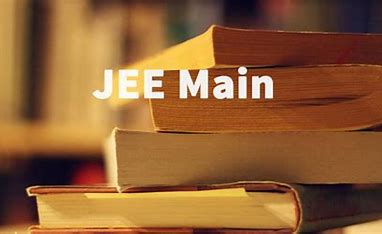
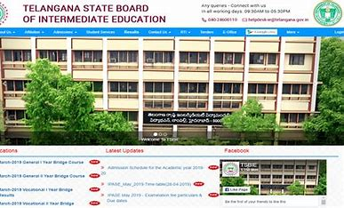

C BSE Board Exam Date Sheet 2023 :Central Board of Secondary Education (CBSE) will release date sheets for Class 10 and Class 12 board exams 2023 on its official websites, cbse.nic.in and cbse.gov.in. As per previous years' trends, the board is expected to release time tables for the upcoming board exams soon.Follow this blog for the latest updates on CBSE board exam 2023.

JEE Main Exam date 2023:JEE Main Exam date 2023 Important dates & Timings can be checked directly from this page and the official website of NTA. NTA will soon publish the JEE Main Exam date 2023 at jeemain.nta.nic.in. By using the JEE Main test date, candidates may keep track of all the upcoming Joint Entrance Examination Main activities.
TS BIE to change inter syllabus for next academic year:The Telangana State Board of Intermediate Education (TS BIE) has decided to change the syllabus for intermediate courses for the next academic year. Accordingly, the BIE will constitute subject-wise committees comprising subject experts to look into the present syllabus and come up with a revised syllabus.

TS SSC Time Table 2023:The Telangana State Board of Intermediate Education TSBIE is planning to release the Time Table for Class 10th for the session of 2022-23. The TSBIE SSC Date sheet 2023 Do be release in December 2022 or January 2023. The paper Do be conduct in April 2023 & the Pre Board examinations do be held in February 2023.